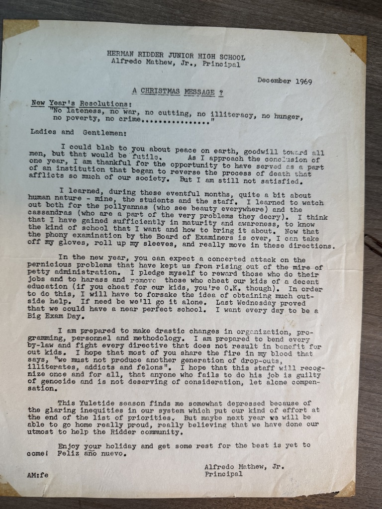

← Back to the family archive
Family Archive · December 1969
The 1969 letter
A Christmas message from Alfredo Mathew Jr. to the staff of Herman Ridder Junior High School.
A document of a public life.
This letter is presented as a primary document in the Alfredo Mathew Jr. family archive. The page around it is deliberately quiet: blue, gold, and white, so the letter can be read as an object in its own right.

Original scan · December 1969Open full-size scan →